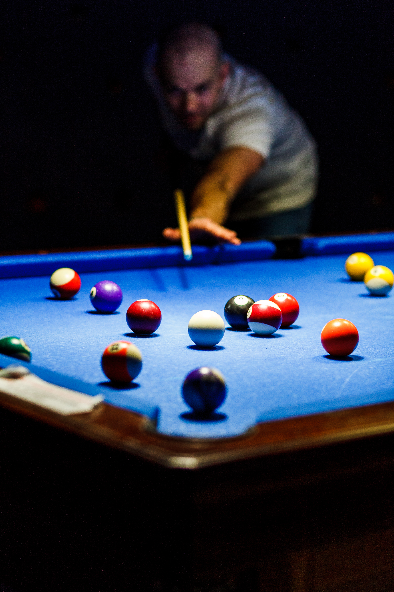
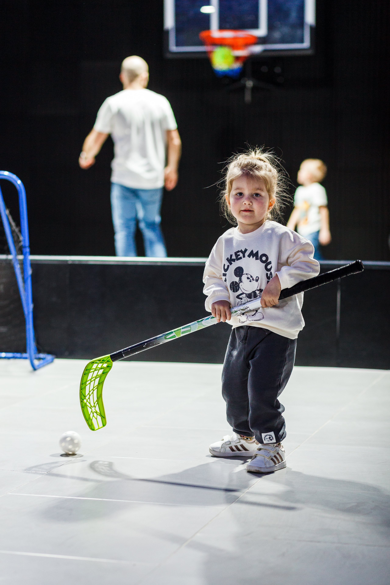
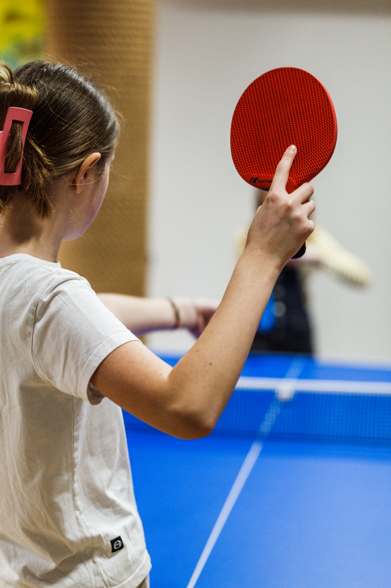
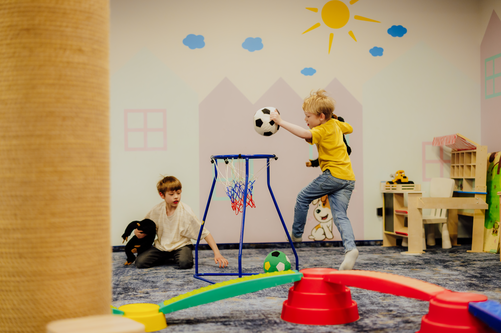
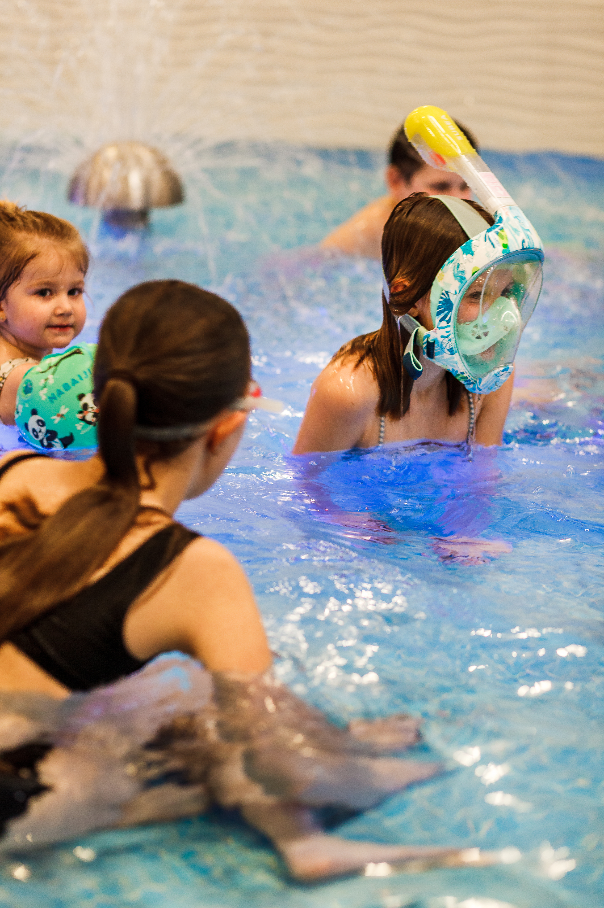
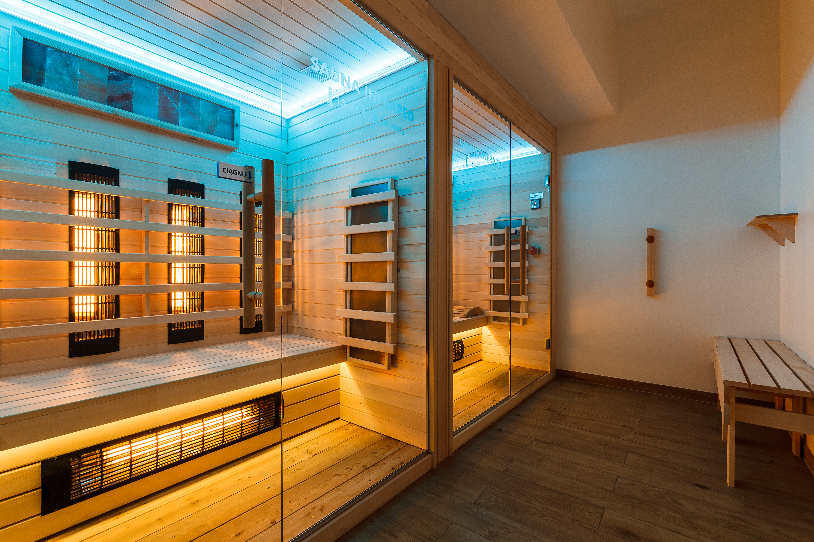
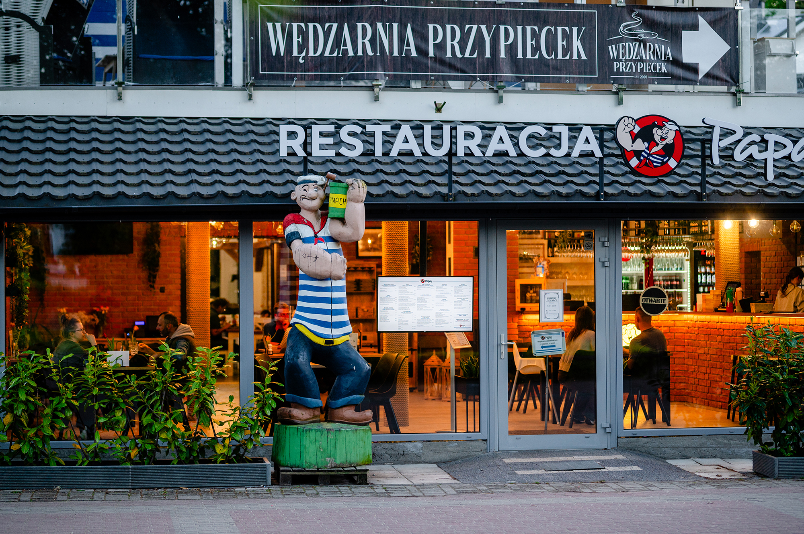
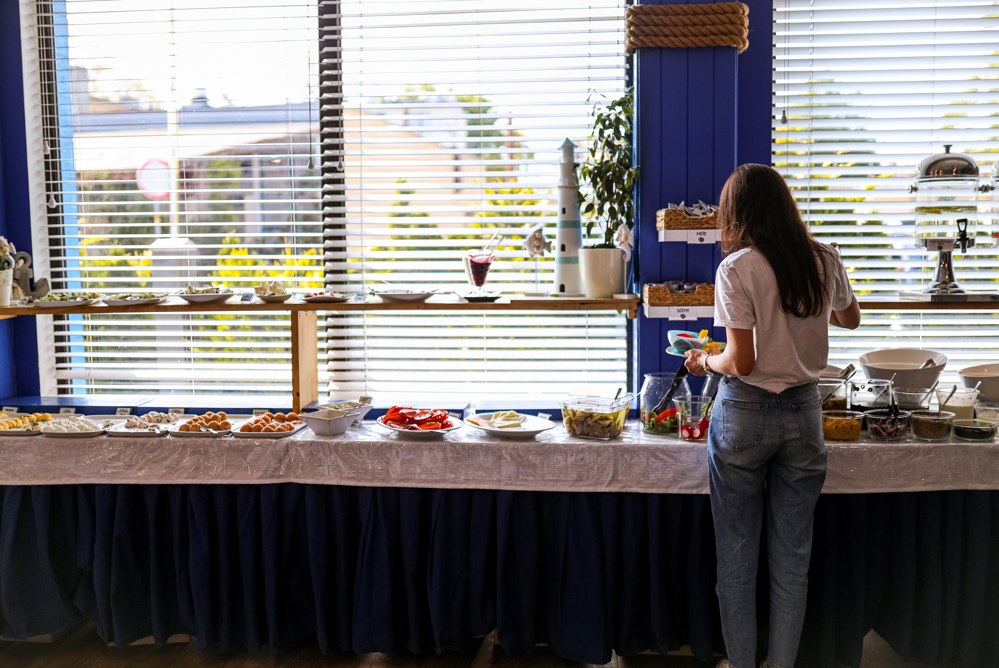
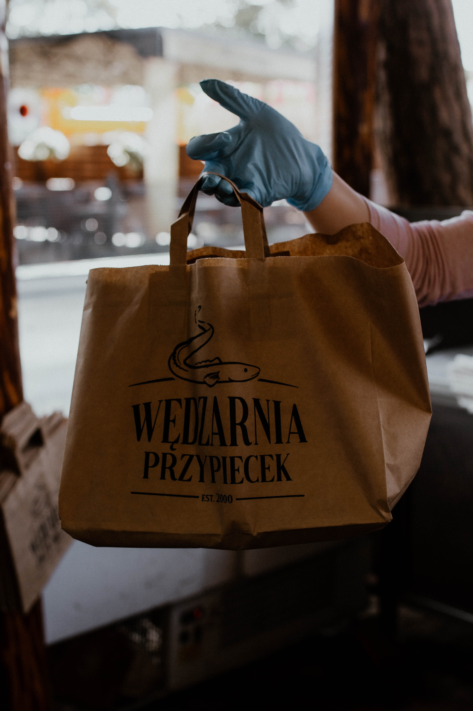

Zameldowanie
Check in od 16:00, check out do 10:00.
WiFi
Nazwa sieci: PILICE.GOŚCIE
Hasło: pilice123
Strefa Rekreacyjna - Papaj Resort
Nasi Goście mogą korzystać z Atrakcji Papaj Resort codziennie od 8:00 do 21:30.
- wewnętrzne boisko do koszykówki
- unihokej
- kolorowa sala zabaw
- tenis stołowy
- billard
- piłkarzyki
- cymbergaj








Basen, Sauna - Papaj Resort
Relaks w strefie wodnej dostępny codziennie od 8:00 do 15:00.
- Basen kryty
- Strefa saun
- Brodzik dla dzieci
- Grota solna





Rowerownia
Poziom -1. Kieruj się oznaczeniami na ścianach. Rowery i kije Nordic Walking są bezpłatne.
Restauracja Papaj
Restauracja Papaj jest otwarta cały rok i oferuje bufetowe śniadania, dania rybne, wegetariańskie oraz menu dla dzieci.



Wędzarnia Przypiecek
Kultowe miejsce na mapie Jastrzębiej Góry tuż obok Restauracji Papaj. Otwarta od maja do września. Oferuje wyśmienite ryby wędzone i smażone w niepowtarzalnej atmosferze.



Przewodnik Gościa
Najlepsze miejsca w okolicy na jednodniowe wypady zebrane w poręczny przewodnik.
Zobacz PDFCzęsto zadawane pytania (FAQ)
Co zrobić jak nie działa mi kod do drzwi?
Jeśli nie masz ze sobą klucza, zadzwoń do nas pod numer widoczny w stopce strony.
Czy na terenie obiektu można palić?
We wszystkich apartamentach obowiązuje zakaz palenia. Palić można wyłącznie na balkonach i w ogródkach. Popielniczka znajduje się w szufladzie w łazience.
Gdzie znajdują się śmietniki?
Śmietniki znajdują się przy wjeździe do parkingu podziemnego. Wejście przez parking podziemny lub od dziedzińca.
Gdzie znajduje się najbliższy sklep?
Delikatesy Skorpion (Rozewska 1) to mały, ale dobrze wyposażony sklep tuż za rogiem, otwarty również w niedziele. Jak dojść?
Gdzie znajduje się najbliższy market spożywczy?
Najbliżej jest Polo Market, 160 m od Pilic. Jak dojść?
W Mieroszynie, 4 km od Pilic jest Biedronka. Jak dojść?
Gdzie znajduje się najbliższa stacja paliw?
Najbliżej w Łebczu, lokalna stacja paliw Renusz, 8 km. Jak dojechać?
Dalej, we Władysławie jest Orlen oraz CircleK, 10 km.
Orlen-jak dojechać?
CircleK-jak dojechać?
Gdzie znajduje się najbliższa apteka?
Apteka Bursztynowa znajduje się na ulicy Królewskiej 9, około 300 metrów od Apartamentów Pilice. Jak dojść?
Gdzie znajdę najbliższy postój taksówek?
Postój znajduje się tuż obok hotelu Ara. Poza sezonem polecamy zamawiać taksówki z Władysławowa. Jak dojść?
Gdzie znajduje się najbliższy przystanek PKS?
Najbliższy przystanek jest naprawdę blisko, bo tylko 190 metrów od Pilic. Jak dojść?.
Do Gdyni i Karwi dojedziesz autobusem PKS linii 650. Do Pucka i do Władysławowa dojedziesz autobusem linii 668.
Sprawdź rozkład tutaj.
Gdzie znajduje się najbliższy szpital?
Szpital miejski w Pucku, 18 km. Jak dojechać?
Szpital specjalistyczny w Wejherowie, 38 km. Jak dojechać?
Czy na miejscu naładuję samochód elektryczny?
Tak, bezpośrednio przed budynkiem znajdują się dwie ładowarki gdzie za 2 zł za kWh naładujesz swój samochód elektryczny. Skontaktuj się z Recepcją żeby skorzystać z ładowarki.